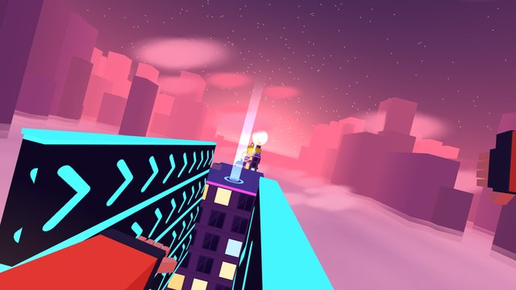
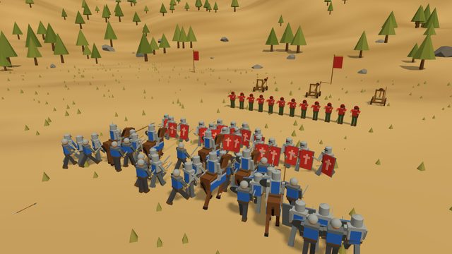
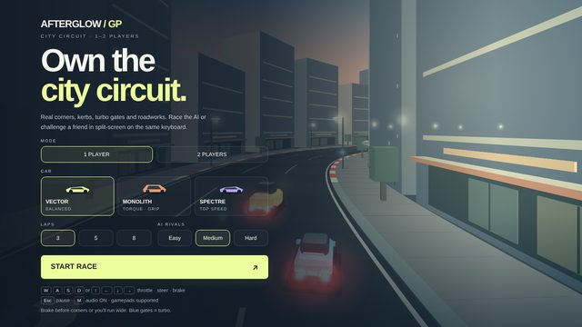
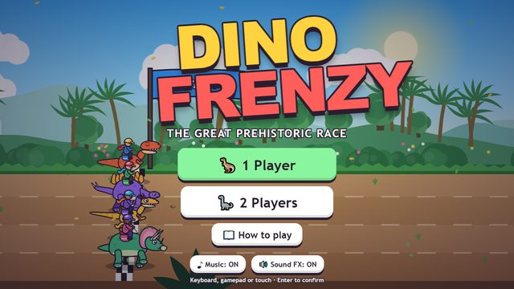
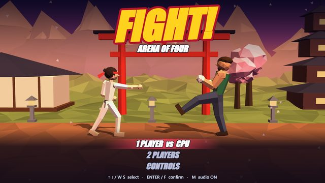
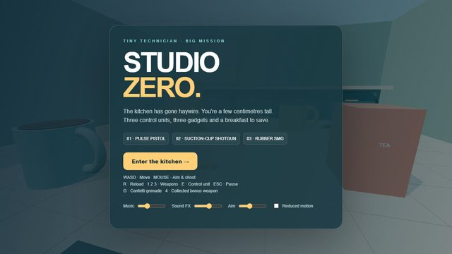
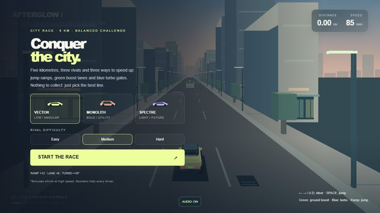

NEWSkyflip
Run across floating rooftops above the clouds: wall-run, slide, bounce on trampolines and land backflips for huge combos.

NEWIron Line
Spend your gold on swordsmen, archers, knights and catapults, place them on the field and watch the armies clash. Jump into any soldier and fight yourself.

Afterglow GP
Lap racing on a 3D city circuit with real corners, kerbs and turbo gates. Beat the AI or a friend in split-screen.

Dino Frenzy
The great prehistoric race: ride your dinosaur past volcanoes and obstacles and cross the line first.

Fight!
One-on-one 3D fights in the Arena of Four: four fighters, special moves and supers. Take on the CPU or a friend.

Studio Zero
You're a few centimetres tall and the kitchen has gone haywire: three control units, three gadgets and a breakfast to save.

City Rush
Five straight kilometres through the city at sunset: ramps, boosts and three rivals to beat to the line.